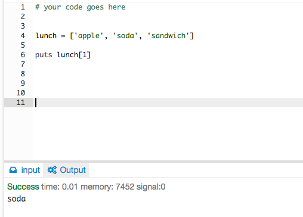
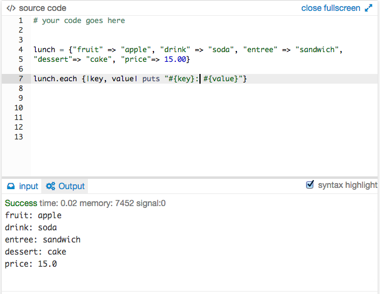

There are many ways that one can manipulate and store data, and depending upon how that data will be used and accessed determines which method would be the best option. Two of the most popular forms of storing data are arrays and hashes, and each has their own qualities that can make them an ideal choice. Lets explore them both, starting with arrays.
Arrays store data by using a zero-based integered indexing system. A zero-based indexing system means that the first slot of the array is always zero and the array has as many slots as there are for each piece of data to have its own slot yielding a number of slots equivalent to the number of data pieces, which is also known as its length, minus one. For instance, if someone had an array called "lunch" that had three things in it, say an apple, a soda, and a sandwich, and wanted to access the soda, they would have to call the name of the array and the index where the soda is located. In this case they would say 'puts lunch[1]'. This is good to use if they wanted to iterate through an array and access elements in order or get one particular thing from the array.

Hashes are similar to arrays except that hashes do not use zero-based indexing as keys to store items. Instead hashes keep groups of data together, regardless of object type, and stores it under another key name, not a prenumbered slot. Hashes allow a computer to perform more complex filtering and selection operations. One thing that make hashes stand out is its quick lookup capability in faster than linear time. Hashes must have unique keys since that is where the information of values will be stored, but the values don't have to be unique. When using hashes, the function is typically performedd much faster than arrays so it would be ideal if I had a gigantic amount of data and wanted to access certain pieces of it. For the interest of time, the example will show its everyday functionality in how it deals with normal list of data and how the keys work.

So as you can see, both have their uses in the world of programming, it just depends on how you want to manipulate and manage your data and the efficiency with which you choose to operate!
| T-1 | T-2 | T-3 | T-4 | T-5 | T-6 | T-7 | T-8 |
| C-1 | C-3 | C-4 | C-5 | C-6 | C-7 | C-8 | C-9 |